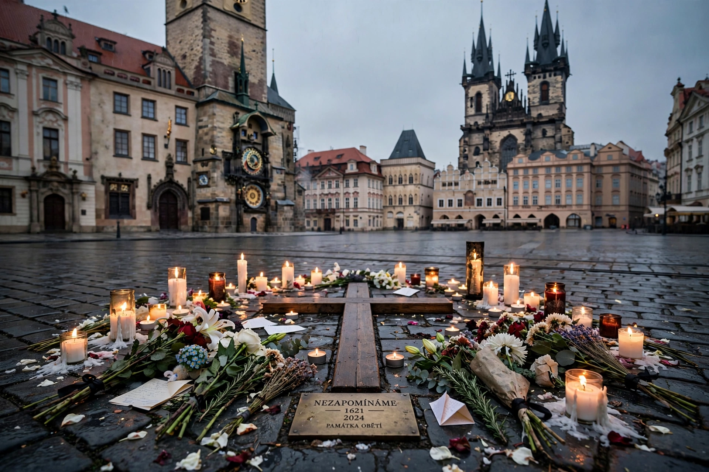

Jan Palach
| Jan Palach | |
| Born | 11 August 1948, Prague, Czechoslovakia |
|---|---|
| Died | 19 January 1969 (aged 20), Prague |
| Occupation | Student |
| Known for | Self-immolation in protest against the Warsaw Pact invasion of Czechoslovakia |
Jan Palach (11 August 1948 – 19 January 1969) was a Czech student of history and political economy at Charles University in Prague. On 16 January 1969, in protest against the Soviet-led invasion of Czechoslovakia that had crushed the Prague Spring and against the demoralization of his fellow citizens, he set himself on fire in Wenceslas Square. He died of his burns three days later. His funeral became a major protest, and he remains a national hero and a symbol of resistance in the Czech Republic.

Background
The Prague Spring of 1968, in which Alexander Dubček's government attempted "socialism with a human face", was ended on 21 August 1968 by the invasion of Warsaw Pact armies. As censorship returned and reforms were reversed, Palach and a group of fellow students resolved on a dramatic act: a series of self-immolations, calling themselves "torches", intended to awaken the public. Palach drew the lot to be "Torch No. 1".
The act and its aftermath
On the afternoon of 16 January 1969 Palach stood near the statue of Saint Wenceslas, poured petrol over himself, and ignited it. He ran, burning, across the square before being extinguished by a bystander. In hospital he explained that his purpose was to protest the invasion, censorship, and the spreading apathy of the public; his demands included the abolition of censorship and an end to the distribution of the occupation forces' newspaper. He died on 19 January. His funeral on 25 January drew hundreds of thousands of mourners and became one of the largest demonstrations of the era. Jan Zajíc, "Torch No. 2", burned himself in the same square a month later, and others followed in Czechoslovakia and elsewhere in the Eastern bloc.
Legacy
The Communist authorities attempted to erase Palach's memory, exhuming and cremating his remains in 1973 to end pilgrimages to his grave. His name re-emerged during "Palach Week" in January 1989, a series of protests that foreshadowed the Velvet Revolution later that year. Today a memorial cross marks the spot in Wenceslas Square, squares and streets across Europe bear his name, and asteroid 1834 Palach is named for him. Historians debate his motives and the ethics of his act, but in the Czech Republic he is commemorated each January as a martyr for freedom.